Aktuality
Zachraňujeme historii, která mizí před očima
Jistě jste se na našich stránkách dočetli, že kromě modelové železnice se věnujeme také záchraně důlních lokomotiv a vozů, které byly nedílnou součástí našeho kraje. S koncem těžby černého uhlí jsou tyto stroje postupně vyřazovány a končí ve šrotu. Naší snahou je tuto techniku alespoň v malé míře zachránit.
Chcete přiložit ruku k dílu?
Zaujal vás tento projekt a rádi byste se stali jeho součásti, či přiložili ruku k dílu? Uvítáme jakoukoli pomoc, ať už jste bývalý horník, železniční nadšenec, či vás baví práce rukama.
Aktuálně se snažíme provést větší úpravy na lokomotivě, aby byl její provoz spolehlivý. Kromě toho stavíme krátkou drážku v Bohušově, takže o zajímavou práci není nouze.
Co vám můžeme nabídnout?
Peníze vám za odvedenou práci dát nemůžeme. Čeká na vás však príjemný kolektiv, práce v zajímavém prostředí a dobrý pocit z odvedené práce. Pokud vše půjde jak má, rádi bychom vyhlásili veřejnou i veřejnou brigádu.
Zaujali jsme vás? Napište nám email a domluvíme se
DĚKUJEME!


18. 7. 2026 se budeme opět po roce účastnit akce Osoblažení na rodinném bylinkovém ranči v Horních Povelicích.
Na místě bude kromě našeho stánku společně s Osoblažskou úzkokolejkou několik řemeslníků a hospodářů, úkázka řemesel, prodej zemědělských výrobků, či možnost prohlídky drobných hospodářských zvířat. Kromě praktických ukázek proběhne série 3 různých přednášek.

Publikováno 8. 7. 2026
První dva březnové víkendy (7., 8., 14. a 15. 3.) jsme se zúčastnili akce Sležští železniční modeláři na hradě. Kromě nás zde byly modulové kolejiště Železničních modelářů Karviná a Slezských železničních modelářů, na kterých se dohromady prohánělo přes 25 souprav.
Kromě Gčkového kolejiště, návěstidla a přejezdu jsme vystavovali i Lego vláčky. Druhý březnový víkend byl ve znamení českých modelů vlaků ze stavebnice Lego. Na kolejišti zak bylo možné potkat Brejlovce s patrovými vozy či rychlíkovou soupravou, lokomotivu 741.6, Parní lokomotivy BR52 "Němka" a BR80 či dieselovoou lokomotivu BR130 "Ragulin".
Velké díky patří především našim kamarádům, Davidu Venusovi a Vojtěchu Hruškovi za spoluúčast a poskytnutí výše zmíněných modelů. Dále děkujeme Slezskoostravskému hradu za možnost se zúčastnit a také všem návštěvníkům, kteří se na nás přišlo podívat.


Publikováno 16. 3. 2026
První dva březnové víkendy se opět zúčastníme výstavy na Slezskoostravském hradě společně s Železničními modeláři Karviná a Slezskými železničními modeláři.
Návštěvníci můžou vidět modilové kolejiště v měřítku TT, zahradní železnici ve velikosti G, posunové návěstidlo a další exponáty.
Na výstavu se dostanete v rámci běžného provozu Slezskoostravského hradu, tedy mezi 10. a 17. hodinou. Vstup pro dospělou osobu stojí 100Kč,pro děti, studenty a seniory 60Kč, pro děti ve věku 3 až 5 let vstup stojí 30Kč.
Publikováno 30. 1. 2026
Výstava v Karviné 15. a 16. listopadu
O víkendu 15. a 16. listopadu se zúčastníme výstavy železničních a dalších modelů. K vidění bude modulové kolejiště ve velikosti TT, modelové domečky, Rc modely nákladních aut a další. Nás zde uvidíte s Gčkovým kolejištěm.
Publikováno 30. 10. 2025
Výstava na Slezskoostravském hradě!
O víkendu 18. a 19. října se zúčastníme výstavy na Slezskoostravském hradě v Ostravě společně s Slezskými železničními modeláří a Železničními modeláři Karviná.
Budeme vystavovat kolejiště ve velikosti G a možná i něco navíc!
Publikováno 29. 9. 2025
Hledáme nové členy!
Baví tě železnice nebo modelaření, jsi zručný/á a kamarádský/á? Umíš pracovat v týmu a rád by ses účastnil/a zajímavých projektů? Možná hledáš právě nás!
Hledáme jakékoli zájemce od věku 12 let, ať už jsi teenager nebo dospělý! Zaujali jsme tě? Ozvi se nám a přijď se podívat do našeho kolektivu. Pokud máš jakékoli otázky, neboj se nás na ně zeptat!
Publikovano 9. 9. 2025
Letní akce na Osoblažsku
V červenci jsme se zúčastnili hned dvou akcí na Osoblažsku. 12. na Fajném létě v Osoblaze ve spolupráci s Osoblažskou úzkokolejkou a 26. akce Osoblažení v Horních Povelicích.
Na obou akcích jsme vystavovali cestovní kolejiště e velikosti H0 se třemi různými rozchody, kolejiště a vláčky ve velikosti G, lego kolejiště pro děti, výstražník AŽD 97 a část z odjezdové tabule Pragotron.
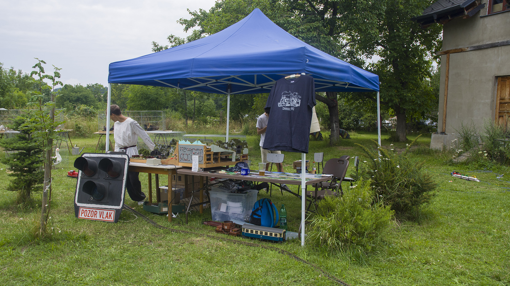
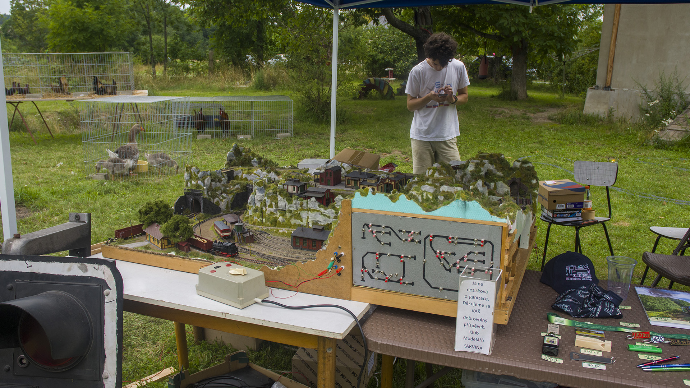
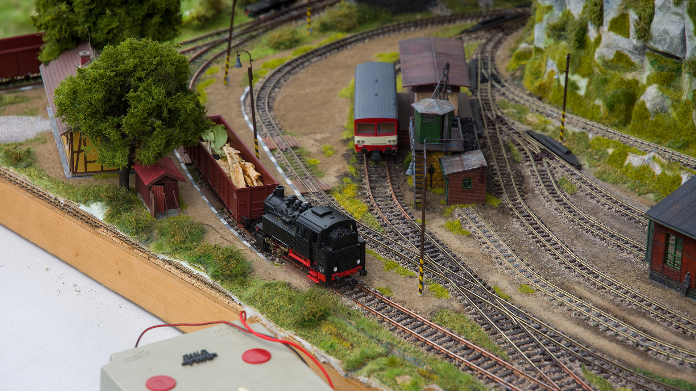
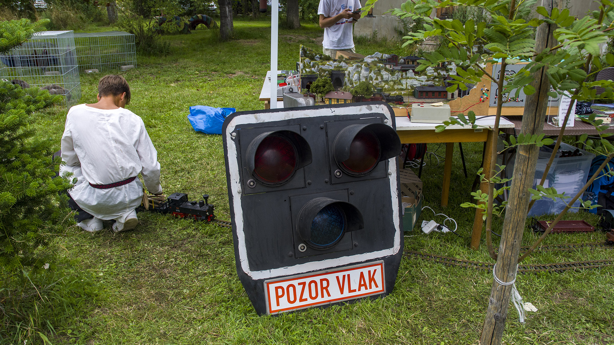
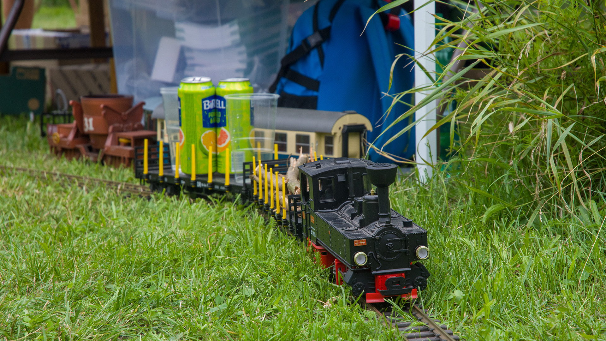
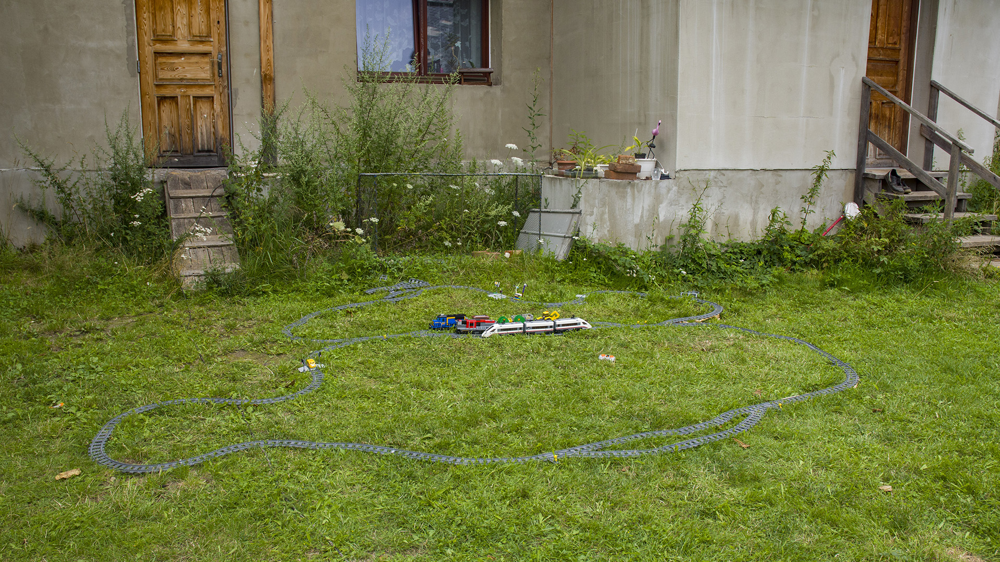
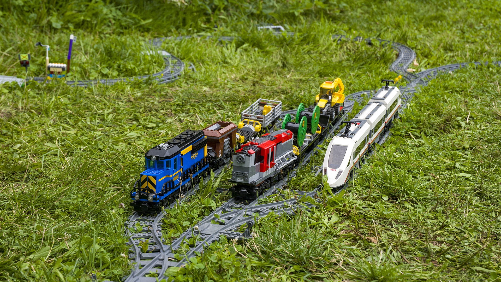
Publikovano 9. 9. 2025
Návštěva v lesní železnice v Rajnochovicích
Ve čtvrtek 8. května 2025 jsme se vydali na návštěvu ke "kolegům" na rozchodu 600mm do Rajnochovic. Návštěvu určitě doporučujeme všem příznivcům. Jelikož na důlním rozchodu teprve začínáme, byli jsme rádi za každou radu, kterou nám chlapi dali. Od rad se stavbou kolejí, až po údržbu lokomotiv. Prohlédli jsme si jejich veškeré zázemí, depo vozový park a také celou trať. Získali informace, co je nejlepší a nejdůležitější získat pro budoucí provoz. Všichni jsme měli možnost si vyzkoušet takovou lokomotivu vést, za což obrovské DÍKY!
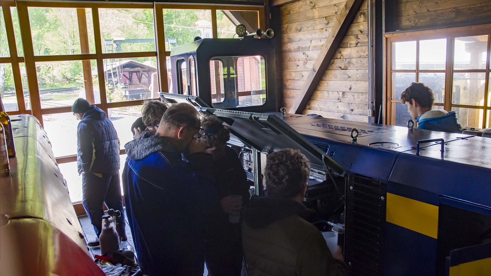
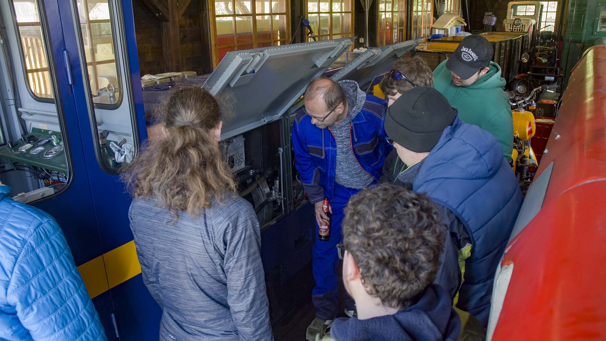
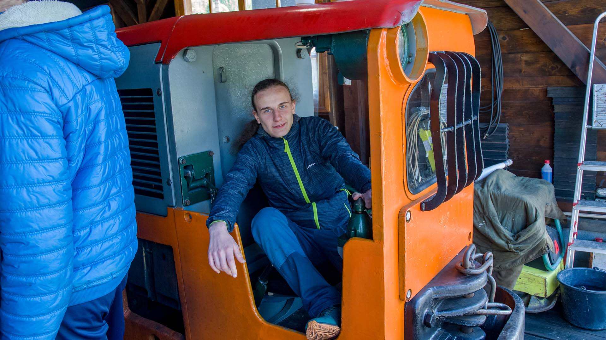
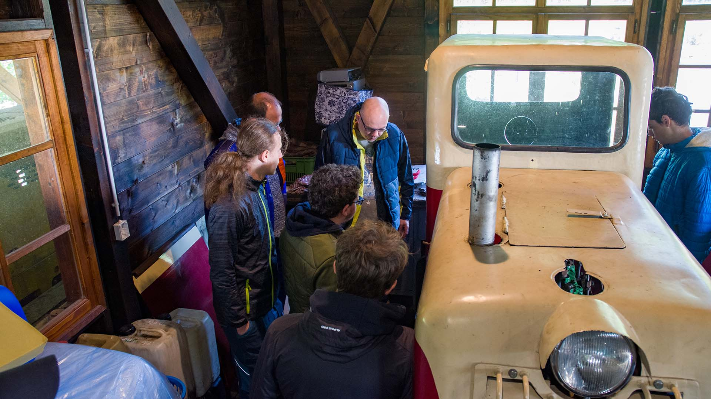
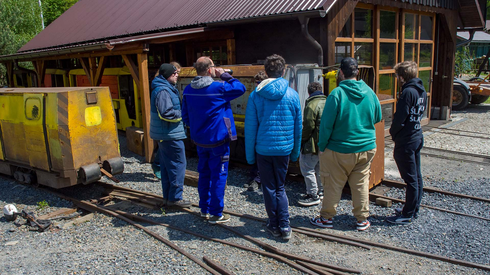
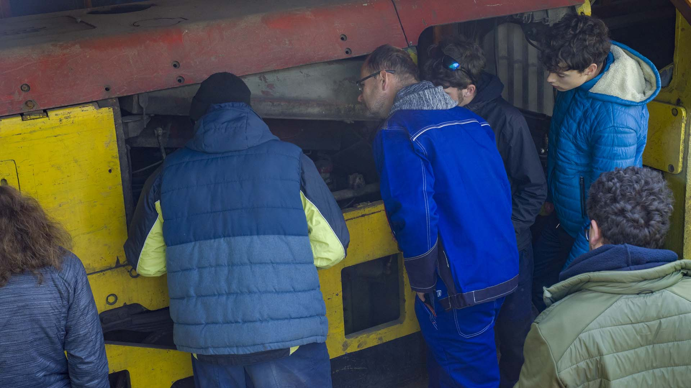
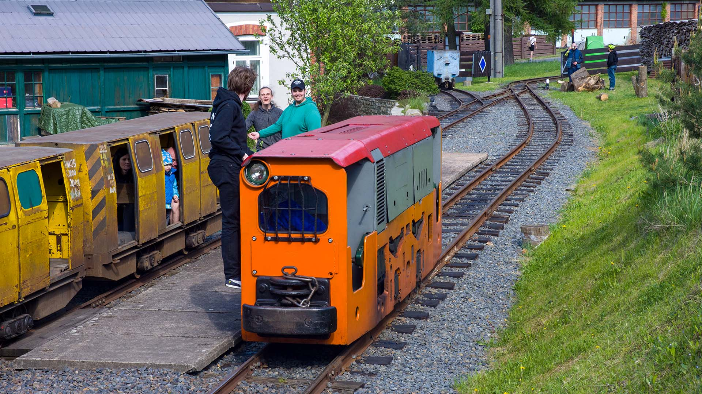
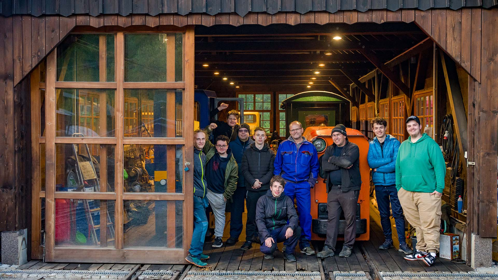
Publikovano 17. 8. 2025